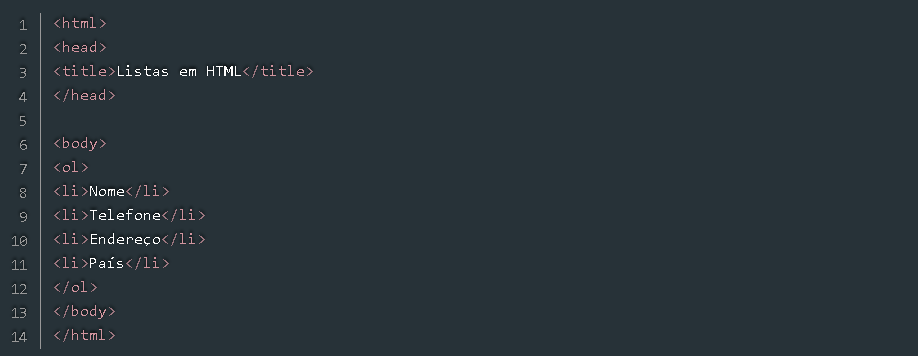
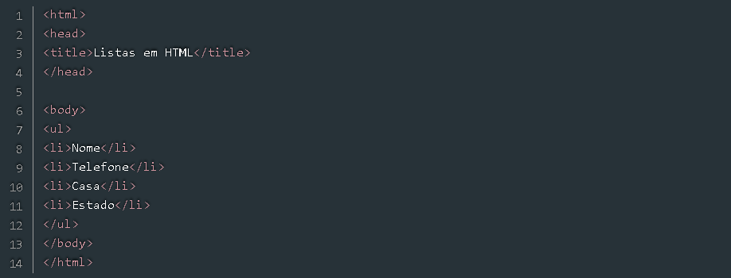

Uma lista ordenada começa com a tag "ol" e seus respectivos itens da lista ficam dentro da tag "li". Por padrão as listas ordenadas são ordenadas por números, mas também iremos ver como ordena-la por outros métodos.
Vamos ao código:
Aparecerá assim no site:
Já as Listas desordenadas são iniciadas com a tag "ul" e são representadas por pequenos “bullets”, vamos ao código:
A imagem ficará assim: